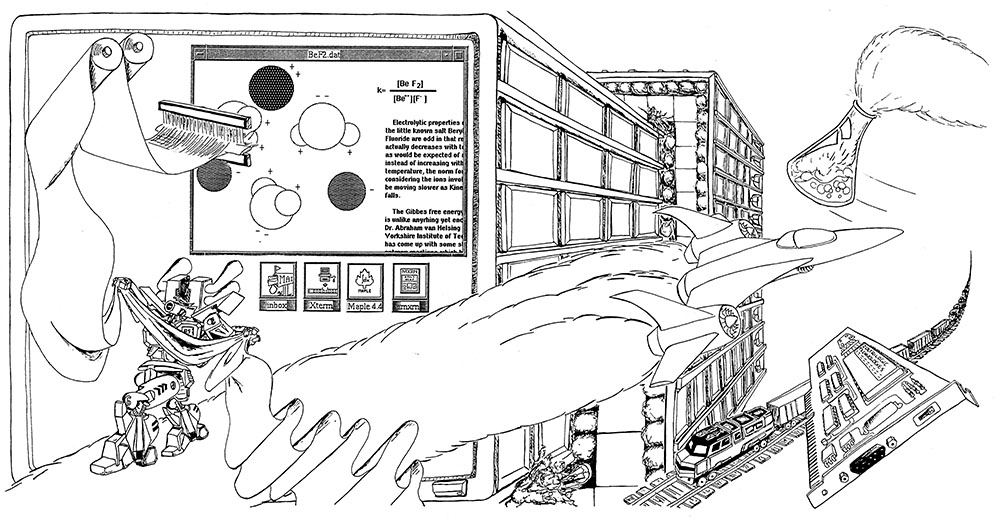

Wonders of Engineering (1991)
This image was the cover-art for the NC State College of Engineering Handbook for the 1991-92 school year (though I may be off by a year or two). I really love wrap-around cover art, and wanted to make one for the handbook. These handbooks are a thing of the past, now that we distribute everything through the web, but I think it's a great idea to get students to liven up the program with their artwork. What better way to get people to invest in their school? It worked on me. Because of this and many other such experiences, I've devoted my career to NCSU.
I guess that I got into engineering the same way that everybody does: an infatuation with technology that won't quit. This cover is a hodge-podge of some of my favorite techie paramours, including jets, trains, circuit-boards, exploding Erlenmayer flasks, skyscrapers, looms, and mecha from Japanese manga. At least one thing in this picture is something that I do at work every day (and it's not the mecha).
The computer monitor is showing icons from the NC State Eos system, which was only a couple of years old at the time this was drawn. It's a nod to Eric Scott, Ken Barnhouse, Bobby Pham, Tim Lowman, Marshall Brain, and Bill Willis, all of whom were instrumental in getting me involved in the early days of Eos as a software developer and teaching assistant. Thanks so much to all of you.
© W. Rhett Davis 1991